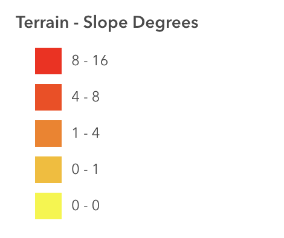
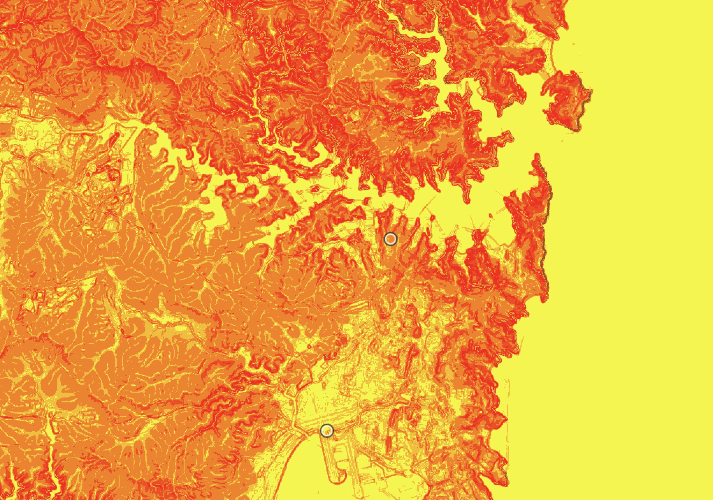
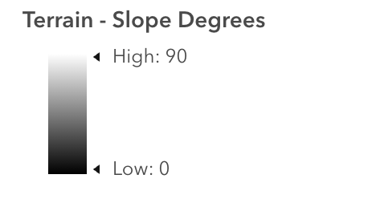
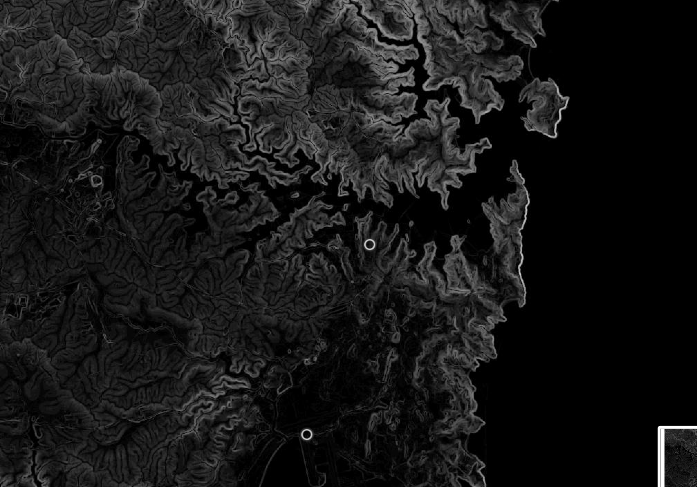

Week 03 · September 2026
Sydney and its terrain diversity
The question
Where are the highest and lowest parts of my Sydney site, and how do the pattern, scale, and density of its terrain features influence water flow?
The data
The elevation data came from the Australia_NSW_DTM5m model, with a 5 m cell size, using the AHD vertical datum. The layer does not state a vertical accuracy value in its metadata, and its reported acquisition period is 16 March 2008 to 14 June 2018. For soils, I used SoilGrids organic carbon density at 0-5 cm depth. SoilGrids is published by ISRIC under CC BY 4.0; the ArcGIS version is a republication accessed through Esri Living Atlas.
A limitation is that the reported 2008-2018 acquisition period describes the compiled NSW dataset as a whole, rather than the exact survey date for my specific site.
The method
I added the layer called Terrain Slope Degrees layer in ArcGIS Online. Slope was derived from the underlying elevation raster rather than measured directly: for each cell, the calculation used a 3 x 3 window consisting of that cell and its eight neighbours. I first displayed the slope values using a continuous stretch and for a clear visualization, the Gamma sets to 1.85. Then I also reclassified the same values into five manually defined classes: 0-0°, 0-1°, 1-4°, 4-8°, and 8-16°. The map extent and zoom level were kept the same when comparing the two renderings. Two different presenting methods of the same slope data can help me understand the terrain features in my site.




What I found
Material would likely move downslope toward the lower-lying areas near the harbour. Surface organic carbon density varies across the Sydney site rather than forming a uniform pattern. Large parts of the highly urbanized area around my Sydney site are not covered by the SoilGrids prediction layer.
What this does not show
The 5 m elevation cells are larger than many urban features that affect local water flow, such as small rivers and narrow drainage channels, so the map may miss important small-scale controls on runoff. Some other sites have 1m elevation data available, which would provide a more detailed view of terrain features and water flow pathways.
、AI use: AI-assisted for tidying the HTML in the week-03 entry, using codex and also generating alt text for the figures. I verified it by opening the page on a phone and a laptop and confirming no external resources were added. The metadata lookup, the symbology choices, the reading of the slope map and the interpretation are my own.